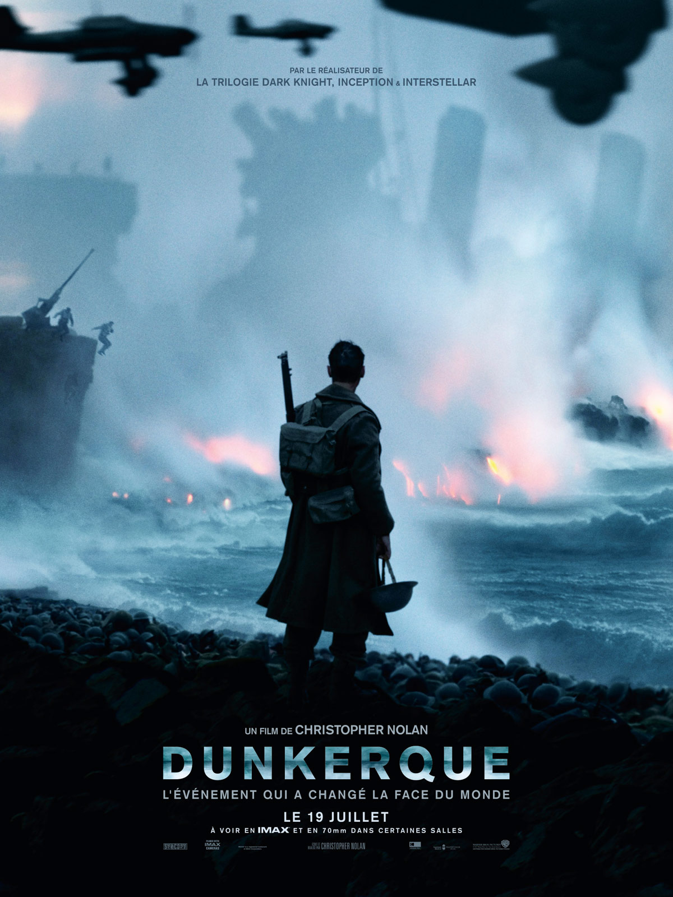
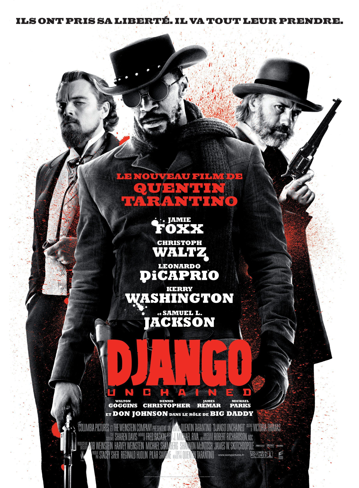
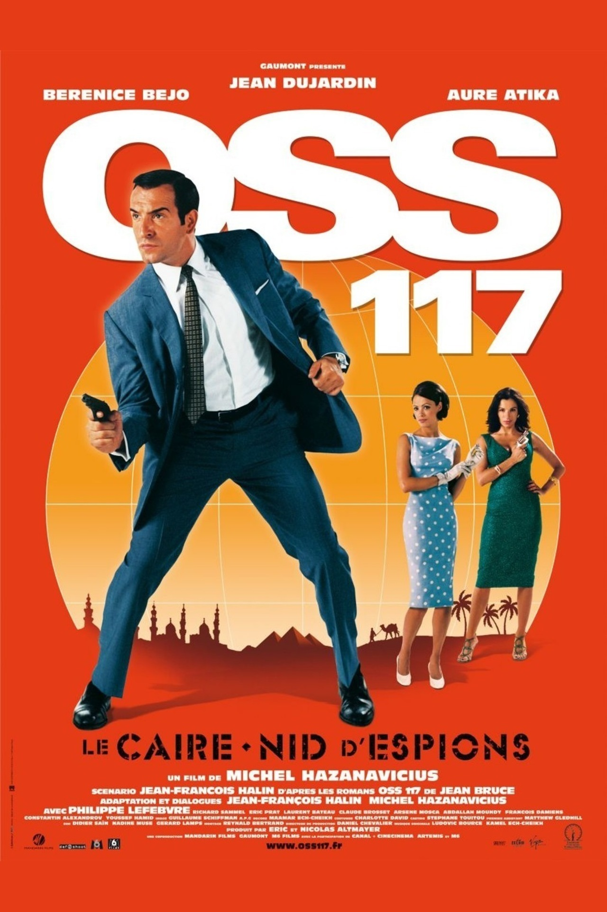

I have studied marketing and international business, then worked for 5 years in cycling related business. I have launched my own company 10 month ago, which is selling bicycle spare parts : carbon fibers only. We are selling online spare part and "a la carte" road bicycles. The company is called : Stiff Bicycles Factory. I am attending Le Wagon to be able to build and make some modification on our website. Also that would help me to find some other ideas for futur collaboration.
|  | DUNKERQUE Evacuation of Allied soldiers from Belgium, the British Empire, and France, who were cut off and surrounded by the German army from the beaches and harbor of Dunkirk, France, between May 26- June 04, 1940, during Battle of France in World War II. |
|  | DJANGO A German dentist buys the freedom of a slave and trains him with the intent to make him his deputy bounty hunter. Instead, he is led to the site of the slave's wife who belongs to a ruthless plantation owner. |
|  | OSS 117 Égypte, 1955, le Caire est un véritable nid d'espions. Tout le monde se méfie de tout le monde, tout le monde complote contre tout le monde : Anglais, Français, Soviétiques, la famille du Roi déchu Farouk qui veut retrouver son trône, les Aigles de Kheops, secte religieuse qui veut prendre le pouvoir. Le Président de la République Française, Monsieur René Coty, envoie son arme maîtresse mettre de l'ordre dans cette pétaudière au bord du chaos : Hubert Bonisseur de la Bath, dit OSS 117. |
Here are my sports activities of the week. For more click on the link